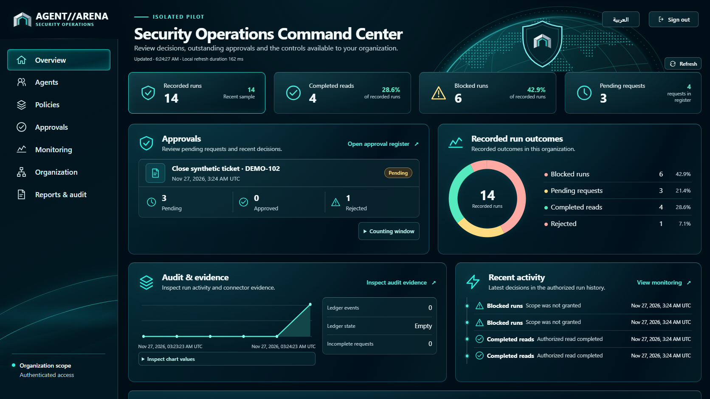

Technical field notes
Explore the field notes.
Search the evaluation records, expand a topic or jump to the original recording.
Decision paths
DEMO-102 is an offline deterministic fixture. The Target proposes a tool and resource. The Blue assessment can contribute an advisory signal. The gateway checks the authenticated actor, tenant and task against the request and ticket state.
Summary plus read can proceed. Summary plus close returns DENIED_SCOPE_ESCALATION and the synthetic ticket stays open. An explicitly authorized close returns PENDING_APPROVAL. A different authorized reviewer and server rechecks of expiry, payload and revision gate the eventual synthetic write.
Earlier merged release · 24 November 2026
24 November 2026 · Private hosted application CI after final merge; all three jobs succeeded. Python 3.12 and 3.13 each reported 728 passed, 33 PostgreSQL-only skips and one Starlette/httpx client warning. The dedicated PostgreSQL 17.12 gate ran those 33 cases with zero skips. This gives 761 distinct Python cases for this inventory.
Node recorded 13 dashboard and API documentation cases in a simulated DOM (including two documentation privacy cases). The offline benchmark ran nine synthetic scenarios with zero provider calls or unauthorized synthetic writes. Its lexical indicator recorded 5 true positives, 1 false positive, 0 false negatives and 3 true negatives. These counts describe a fixed set.
21 November 2026 · In one separate authorized live trial, a single GitHub GET and a single Groq completion (openai/gpt-oss-20b) returned HTTP 200. Only the bounded issue title and body were transferred as issue content. Both audit results recorded success and the input SHA-256 matched. The generated text was not retained for independent quality evaluation.
Final private application update: self-hosted API documentation under CSP and a dependency inventory (SBOM). Automated code and security reviews reported no findings on the reviewed source tree. A ReDoc upstream build-dependency advisory remains under observation; browser reachability is unproven, not ruled out. Keep the application for isolated evaluation; do not expose ReDoc publicly before resolving applicability. This is not an independent penetration test.
Isolated two-organization evaluation
27 November 2026 · Actual Chrome captures of the reviewed console.
An operator’s view
These images show a new disposable session with synthetic records. The evaluation evidence above retains its original date and scope.
A separate 12-step pilot
One HTTPS GET returned the approved synthetic ticket. A request without its grant was refused. The close remained pending until the test approved it through a separately authenticated reviewer account. The stored ticket then moved to revision 1. Cross-organization access returned 404. A stopped connector returned 503. The authorized JSON report included the decision events. Their integrity was verified again after restoring the synthetic database.
Questions before a field pilot
Independent operating oversight, off-host recovery and risk acceptance need separate evidence. A local synthetic evaluation cannot establish performance on customer traffic or coverage of every agent behavior.
Corrected release candidate · 25 November 2026
On 25 November 2026, the hosted Linux evidence for revision 264cfe5 recorded 965 distinct Python cases. Python 3.12 and 3.13 each passed the same 928 general cases. A real PostgreSQL 17.12 job passed all 37 additional cases without skips. All 17 Node cases passed. Nine fixed benchmark scenarios made zero model calls. The authenticated console was also checked locally in Chrome on Windows and Linux.
The released evidence identifies the Linux image used for the run, restart and scan. Tooling SAST, software-composition and container vulnerability gates remain open. Production qualification requires a separate decision.
For a pending or approved action, the organization-scoped PDF and JSON export include the approval reference and the action’s SHA-256 fingerprint. A separately computed fingerprint matched both exports and the recorded decision. Reviewer identity stays in authorized JSON and audit records. Four decision states were checked, and a different organization received HTTP 404.
Read the public evidence summary
Recorded console session
An authenticated operator uses the current console in a disposable local environment. The two-organization pilot results above come from the separately documented evaluation. English and Arabic captions are available.
Original fixture walkthrough
Recorded local synthetic fixture. The proposals in this recording are deterministic.
Actual local console
27 November 2026 · Actual Chrome captures of the reviewed console.


These images show a new disposable session with synthetic records. The evaluation evidence above retains its original date and scope.

Architecture, safe local preview and disclosure notes · Watch the original deterministic fixture recording
Evaluation roadmap
Each item describes a proposed evaluation and the evidence to collect before a pilot can advance.
Expand the fixture corpus
Label benign and adversarial synthetic inputs before evaluation. Report false alarms, missed signals and unauthorized state changes separately.
Evaluate live models under consent
Agree on the provider, synthetic fields, call limit, budget and quality rubric. Retain a redacted record of inputs, costs and outcomes for each authorized trial.
Pilot one scoped connector
Use an isolated service and the minimum permissions for one workflow. Demonstrate revocation, upstream failure and safe handling of duplicate requests.
Validate SSO with PostgreSQL
Exercise both together in a production-like topology. Check identity mapping, tenant boundaries, session expiry and revocation across the database and application.
Retain evidence independently
Define external retention, independent integrity checkpoints, key ownership and incident procedures. Show how a reviewer would verify a retained record.
Measure load and failure behavior
Agree on service targets and a workload first. Measure throughput, latency, backpressure and recovery under controlled failure.
Restore a backup
Restore into a separate system. Verify recovered data and evidence integrity, then compare measured downtime and data loss with the agreed recovery objectives.
Commission an independent assessment
Agree on written scope and authorization. Have an independent assessor review the deployed configuration and verify remediation before wider use.
Review privacy and compliance
Work with the organization that owns the data to document residency, retention, access, review obligations and the approvals required for that deployment.
Credits and reuse
Project by Meshal Almasoudi & Fahad Mubarak
The public materials document an isolated test environment. Asset rights and permitted reuse are described in the project notice.
Rights and reuseNo topics match this search.